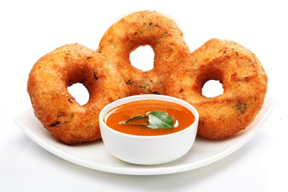

All South Indian Food Recipe's
üçõ South Indian Main Dishes
Dosa
Thin, crispy pancake made from fermented rice and urad dal batter.
Recipe
Idli
Steamed rice cakes made from fermented rice and urad dal batter.
Recipe

Vada
Deep-fried savory fritters made from lentils.
Recipe
Uttapam
Thick pancake with toppings like onion, tomato, and green chilies.
Recipe
Pongal
Savory rice and moong dal dish flavored with pepper and ghee.
Recipe
Upma
Semolina cooked with vegetables and tempered with mustard seeds.
Recipe
Pesarattu
Green gram dosa, a specialty of Andhra Pradesh.
Recipe
Appam
Soft and fluffy center with crispy edges, usually served with stew.
Recipe
Idiappam
String hoppers made from rice flour dough, steamed and served with curry.
Recipe
Bisi Bele Bath
A spicy, flavorful rice-lentil dish from Karnataka.
Recipe
üçõ South Indian Main Dishes
Sambar
Lentil and vegetable stew flavored with tamarind and spices.
Recipe
Rasam
Spicy, tangy soup made with tamarind, tomatoes, and spices.
Recipe
Avial
Mixed vegetable curry with coconut and yogurt, typically from Kerala.
Recipe
Kootu
Vegetable and lentil curry with mild spices.
Recipe
Poriyal
Stir-fried vegetables with coconut and mustard seeds.
Recipe
Theeyal
Roasted coconut curry with vegetables or shallots.
Recipe
Chettinad Chicken
Spicy chicken curry from the Chettinad region of Tamil Nadu.
Recipe
Fish Moilee
Kerala-style fish curry with coconut milk.
Recipe
Egg Curry
Spiced curry made with boiled eggs.
Recipe
üçõ South Indian Main Dishes
Lemon Rice
Rice flavored with lemon juice, mustard seeds, and chilies.
Recipe
Tamarind Rice (Puliyodarai)
Tangy rice made with tamarind paste and spices.
Recipe
Curd Rice
Cooked rice mixed with yogurt, tempered with mustard seeds.
Recipe
Coconut Rice
Fragrant rice made with grated coconut and tempered spices.
Recipe
Parotta
Layered flatbread typically served with kurma.
Recipe
Neer Dosa
Thin, watery rice crepes from Karnataka.
Recipe
üçõ South Indian Main Dishes
Payasam
South Indian version of kheer, made with rice, vermicelli, or lentils.
Recipe
Mysore Pak
Rich sweet made with ghee, sugar, and gram flour.
Recipe
Kesari Bath
Semolina dessert flavored with saffron and ghee.
Recipe
Unniyappam
Kerala-style banana and rice fritters.
Recipe
Filter Coffee
Strong coffee brewed with a metal filter, served with milk.
Recipe
Panakam
Sweet spiced drink made with jaggery, cardamom, and ginger.
Recipe